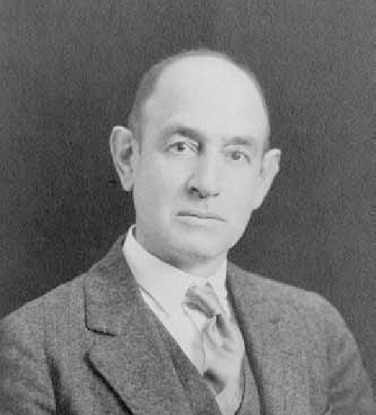
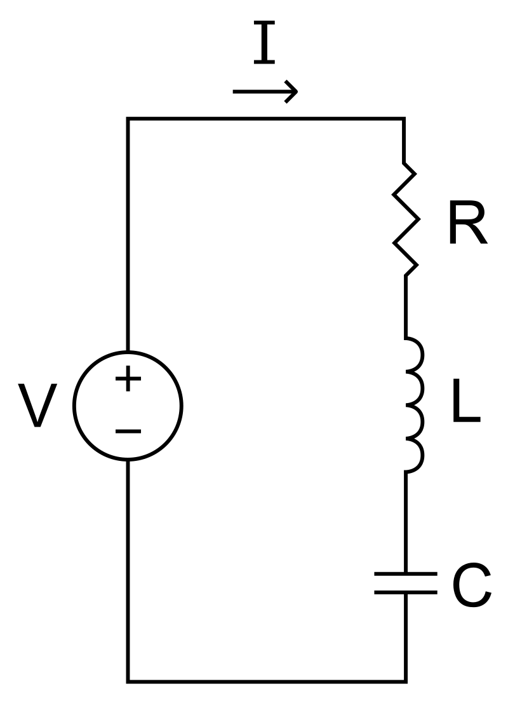
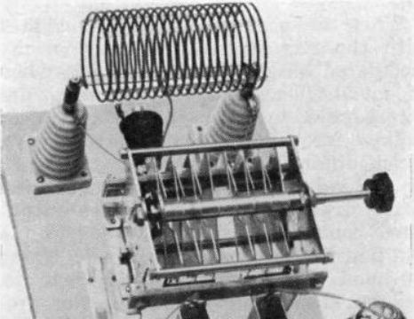
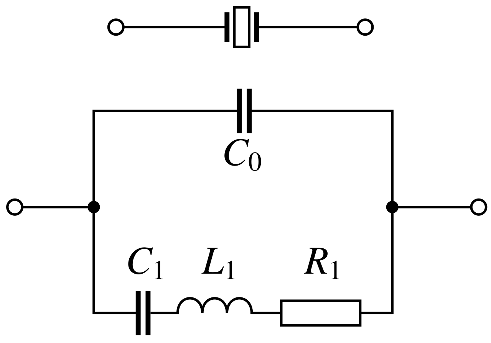
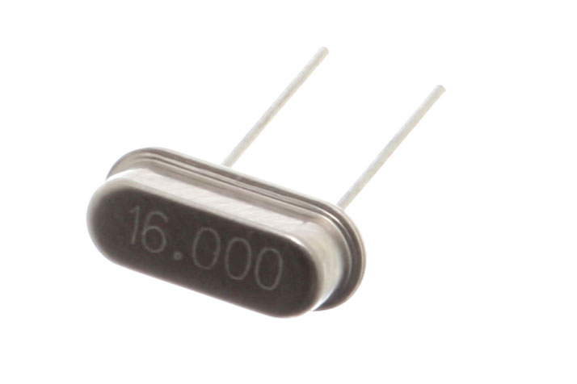
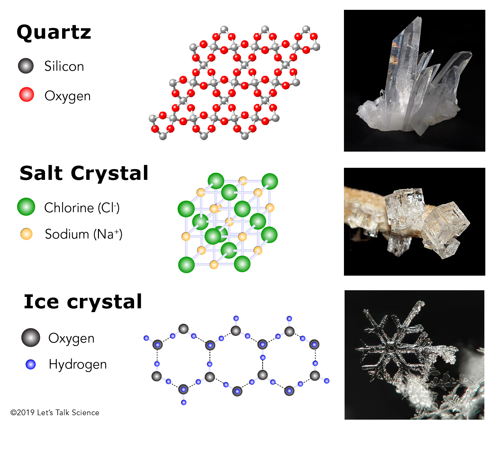
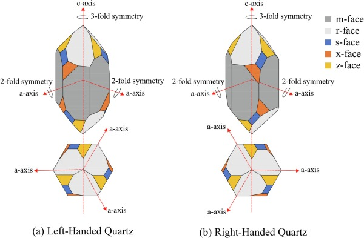
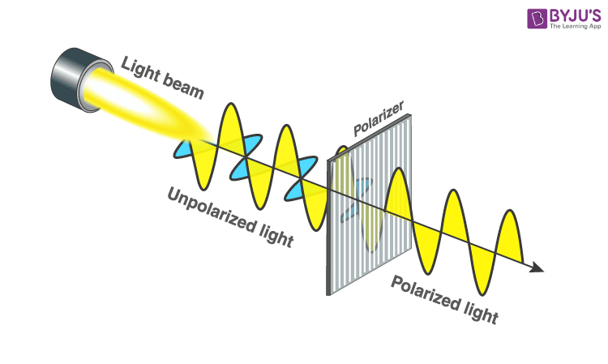

WW2의 수정 이야기 (3) - 수정 깎는 노인... 아니 미국인
게시: 2024-10-10T06:30:31+09:00
<장인이 한땀한땀 감아 만든 회로 vs. 조물주가 깎아주신 회로> 랑쥬뱅이 독일 U-boat를 잡기 위해 수정 결정판을 이용하여 만들었던 수중 청음기는 곧 다른 나라에도 알려졌고, 수정 결정판의 압전 효과를 이용해서 뭔가를 만들어 보자는 노력이 여기저기서 벌어짐. 그 중 가장 먼저 의미있는 사용처를 찾아낸 것은 미국의 물리학자이자 전기공학자인 캐디(Walter Guyton Cady) 박사. 이 양반도 WW1 기간 중 잠수함을 탐지하기 위한 청음기 개발에 투입되었다가, 수정의 압전효과를 알게 됨.

(일부에서는 다른 사람이 더 먼저 만들었다는 주장도 있지만, 아무튼 수정 공명기를 세계 최초로 만든 것으로 일반적으로 인정되는 캐디 박사님. 이 양반의 수정 공명기는 미국과 유럽의 주파수 표준으로 사용되었고 그 공로로 1932년에는 Institute of Radio Engineers 회장도 맡으셨음. WW2 때도 레이더 개발에 일부 공헌하심.) 캐디 박사는 1919년, 수정 결정판을 가변 주파수 공명회로(variable-frequency electronic oscillator)에 연결했더니 특정 주파수에서는 매우 강한 진동을 일으키고, 다른 주파수에서는 전혀 진동을 하지 않는다는 것을 발견. 이 현상에 주목한 캐디 박사는 수정 결정판을 이용하여 공진회로(RLC circuit)의 주파수를 제어할 수 있겠다는 생각을 하고 이후 이런저런 논문을 펴내다 1921년 세계 최초로 수정 공명기(quartz crystal resonator)를 개발하고 특허도 획득. 이걸 어디에 쓰느냐? 쓸 곳은 차고 넘쳤음. 당시엔 아직 레이더라는 물건은 나오지 않았지만, 무선통신과 라디오 방송 등을 위해서는 반드시 일정한 주파수를 안정적으로 만들어내야 했음. 반도체도 없던 시절 그런 주파수는 RLC 회로, 즉 resistor (R 저항), inductor (L 전자기 유도 코일, 인덕터), capacitor (C 축전기, 콘덴서)로 이루어진 전기 회로를 썼음. 그러나 이런 RLC 회로는 당시의 손으로 만든 인덕터 코일이나 금속판 커패시터 등의 부정확성 때문에 품질이 그다지 좋지 않았고 따라서 만들어지는 주파수도 그닥 정확하지 않았음. 게다가 이런 코일이나 금속판 등은 부식이나 이물질, 습기 등으로 인해 고장나기도 쉬웠고 크기도 부담스럽게 컸음.

(RLC 회로의 간단한 그림. 이론상 커패시터(C)에 쌓인 전하가 전압에 의해 회로에 방출되면 전류가 흐르는 것이고, 그 전류 변화가 인덕터(L)에 자기장을 일으킴. 그 자기장이 다시 전자기 유도를 일으켜 원래 전류와는 역방향의 전류를 만드는데, 그 전류는 다시 아까 그 커패시터에 전하를 쌓게 됨. 물론 이 모든 과정에 저항(R)이 댐핑(damping, 감폭)을 일으킴. 이것이 하나의 회로 안에서 전류가 순방향으로 흘렀다 역방향으로 흘렀다 하며 주파수를 만들어내는 것. https://nasica1.tistory.com/636 참조)

(RLC 회로를 이용한 초창기 단파(shortwave) 전파 발신기. 위의 코일이 인덕터이고 밑의 금속판 같은 것들이 커패시터.) 캐디가 만든 것은 수정 결정체를 일정한 고유 방향면으로 깎아서 박판을 만들고 그걸 얇은 두 금속판 사이에 끼운 뒤 전압을 가하면, 그 전압에 의해 수정판에 압전효과가 발생하여 수정판이 변형을 일으키고, 전압이 사라지면 수정판이 다시 원래 모양으로 돌아가면서 커패시터에 반대 방향의 전압을 만들어내는 회로였음. 이렇게 수정 결정체의 고유 압전효과를 이용한 회로는 기존 RLC 회로의 부정확성을 극적으로 개선하면서도 크기도 작게 만들 수 있었고, 결정적으로 잘 고장나지도 않았음.

(아래 회로가 RLC 공명회로, 그리고 위가 그와 동일한 효과를 내는 수정 공명회로. 인간이 얼기설기 손으로 만든 작품과 조물주가 수정에 부여하신 고유 압전효과를 이용한 작품은 차이가 날 수 밖에 없음.)

(16 MHz 주파수를 만들어내는 수정공명기)
<수정 깎는 미국 숙련공들> 이렇게 수정 공진기가 만들어지면서 WW1 이후 수정을 이용한 무선통신 및 전자공학이 확 발전할 것 같았으나... 의외로 발전은 더뎠음. 수정 공진기의 성능이 신통치 않았기 때문이 아니라 특정 주파수에 딱 맞는 수정 결정판 깎는 것이 너무 어려웠기 때문임. 제조 방법이 어려우면 그 제조 방법 개선을 통해 또 하나의 산업이 성장하는 것이 정상인데... 당시 제조 방법을 보면 개선 방법이 잘 보이지 않았음. 일단 수정 결정을 아무렇게나 얇은 박판으로 깎는다고 다 우수한 압전효과를 내는 것이 아니었음. 모든 결정체(crystal)는 방향성을 가짐. 반드시 특정 방향면으로 깎아야 그 효과를 얻을 수 있었는데, 수정의 압전효과에 대한 근본적인 이해가 부족했던 당시 과학 기술 수준으로는 어느 방향이 그 방향인지 알아내기가 어려웠음.

(크리스털이라는 것을 수정이라고 생각하기 쉬우나, 크리스털은 그냥 결정체라는 소리이고 우리가 흔히 수정이라고 생각하는 것은 석영 결정체 (quartz crystal).

(수정 결정체의 다양한 face 및 axis)
그렇게 방향을 알아내기 어려우니 할 수 있는 방법은 자연적으로 형성된 평면을 가진 수정 (faced quartz crystal)만 사용할 수 있었음. 마름모꼴(rhombohedron) 평면을 기준으로, 탄화 규소 혼합제를 윤활제로 써서 조심스럽게 기계톱으로 박판을 잘라낸 뒤, 그 박판을 정성스럽게 손으로 연마하여 먼저 테스트 샘플로 가공. 그렇게 만든 샘플 박판을 두 금속판 사이에 결합시킨 뒤 회로에 넣어 원하는 주파수가 나오는지 확인. 그런데 원하는 주파수가 나오지 않으면 원하는 주파수가 나올 때까지 다시 손으로 딱 맞는 박판 두께를 찾아 연마하는 과정을 거쳐야 했음. 게다가 헤어 드라이어나 드라이 아이스로 온도를 바꿔가며 주파수 특성이 바뀌는지도 검사. 만약 끝내 원하는 주파수가 나오지 않으면 자르는 각도가 틀렸다고 보고 다시 조정하여 다시 테스트 샘플용 박판을 잘라내고 위의 과정을 반복. 그런 식으로 만족할 만한 결과를 내는 절단 각도를 찾으면 그 나머지 수정을 잘라내어 웨이퍼를 만드는 것. 물론 각각의 웨이퍼들도 조심스럽게 잘라낸 뒤 손으로 연마하고 테스트하는 과정을 다 거쳐야 했음. 문제는 이런 식으로는 생산 속도가 너무 느리고, 또 이렇게 대충 눈대중으로 자르고 테스트하는 식이니 정확도가 그다지 만족스럽지 못했다는 것. 나중에는 편광(polarized light)을 수정에 투과시켜 어느 각도로 수정을 잘라내야 할지 정하는 방법이 개발되어 크게 도움이 되었고, 또 다이아몬드 날을 장착한 전기톱과 표면 연마기 등을 도입하고 그렇게 잘라낸 수정 박판을 불산(hydrofluoric acid, 불화수소산)으로 부식시켜 오차를 만드는 결함(twinning defect) 부분을 찾아내는 방법이 개발되어 생산성이 높아졌음. 그 결과 1930년대에는 수정 공명기 시장이 꽤 성장할 수 있었음.

(가시광선이든 레이더파이든 모두 전자기파이고, 전자기파는 편광 필터 등에 의해 극성을 띠게 만들 수 있음.)
하지만 이런 식으로는 1kg의 수정을 이용하여 2~3cm 길이의 수정 박판을 고작 20~30개 만들 수 있었고, 그 비용은 30달러 정도가 들었음. 눈으로 보았을 때는 완벽하기 그지 없는 영롱한 수정 결정체가, 알고 보니 압전효과에 부정적인 영향을 주는 twinning이라는 결함을 내부적으로 포함하는 경우가 의외로 많았던 것. 이런 결함은 박판으로 잘라내고 불산 부식으로 엣칭(etching)을 해보기 전에는 그 존재 여부를 알 수 없었기 때문에 더욱 생산 시간과 비용의 증가를 낳았음. 또 아무리 연마기를 이용하여 연마한다고 해도 결국 사람이 일일이 손으로 알맞은 두께로 연마해야 원하는 주파수를 얻을 수 있었으므로 숙련공에 대한 의존도도 높았음. 어쨌거나 이런 식으로라도 미국의 수정 공업계는 계속 발전하여 1939년 한 해 동안 무려 10만개의 수정 박판을 제조해내는 수준에 이르렀음. 그러나 막상 WW2에 미국이 뛰어들기 직전까지도, 미군 장성들은 수정 공진기를 이용한 무선통신에 대해 무척이나 부정적이었음. 대체 왜들 그랬을까?